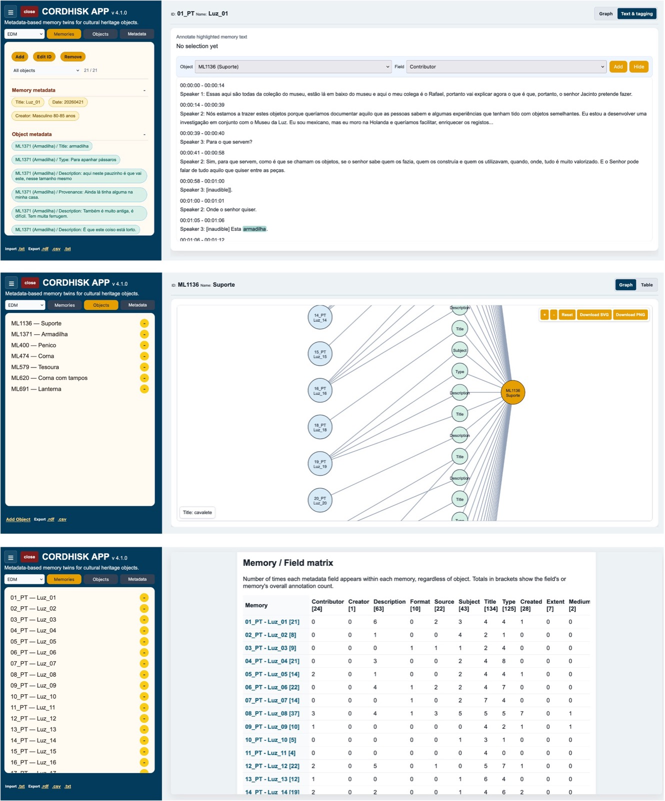
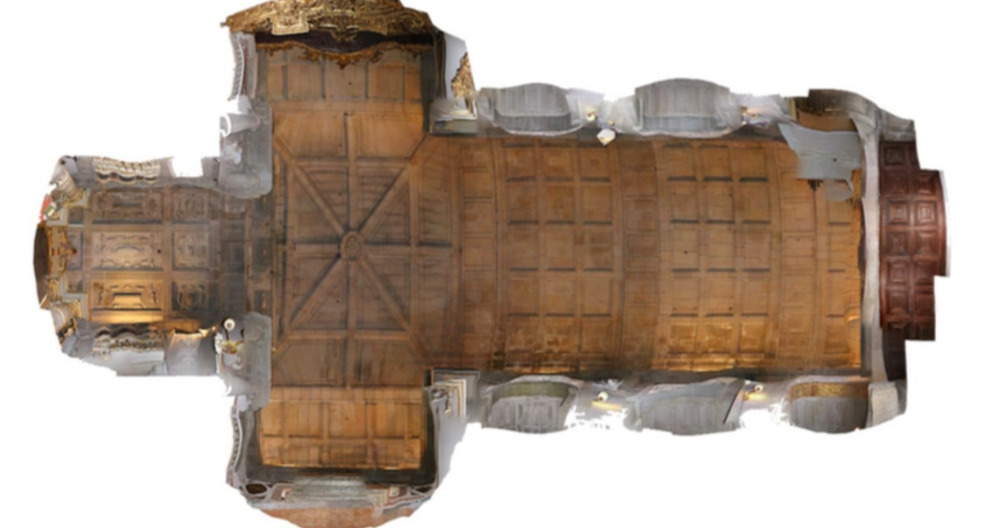
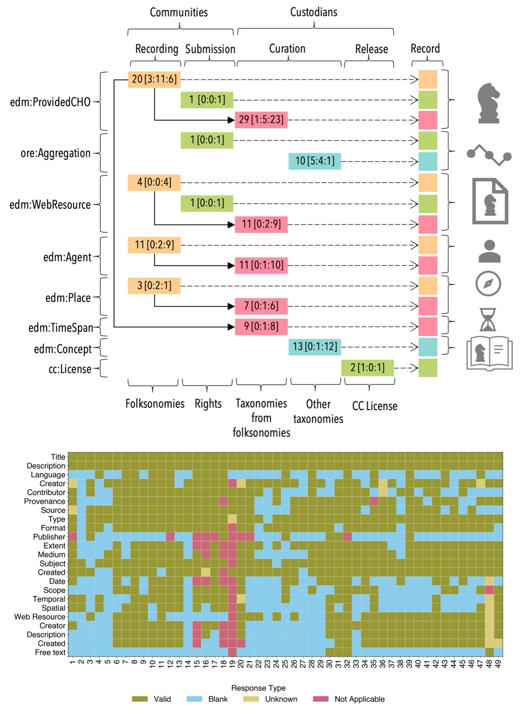
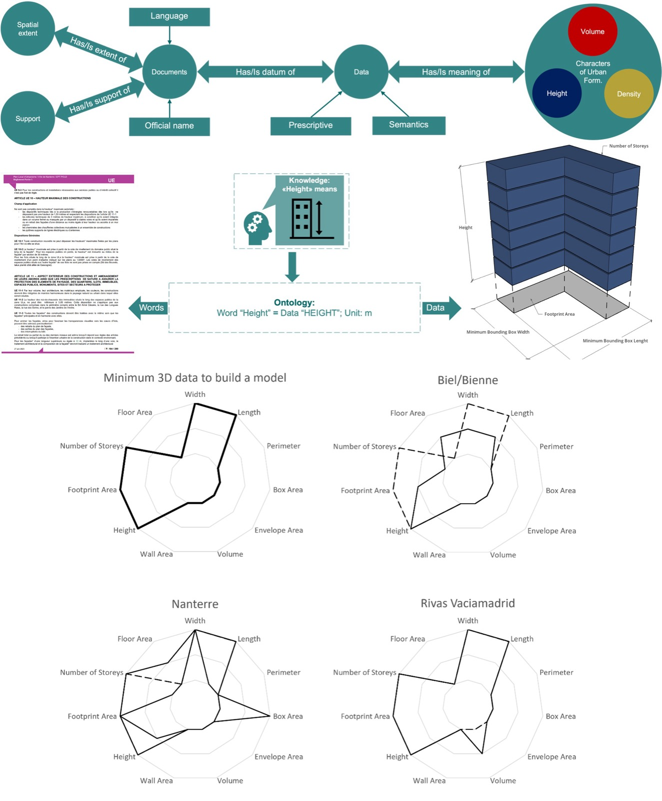
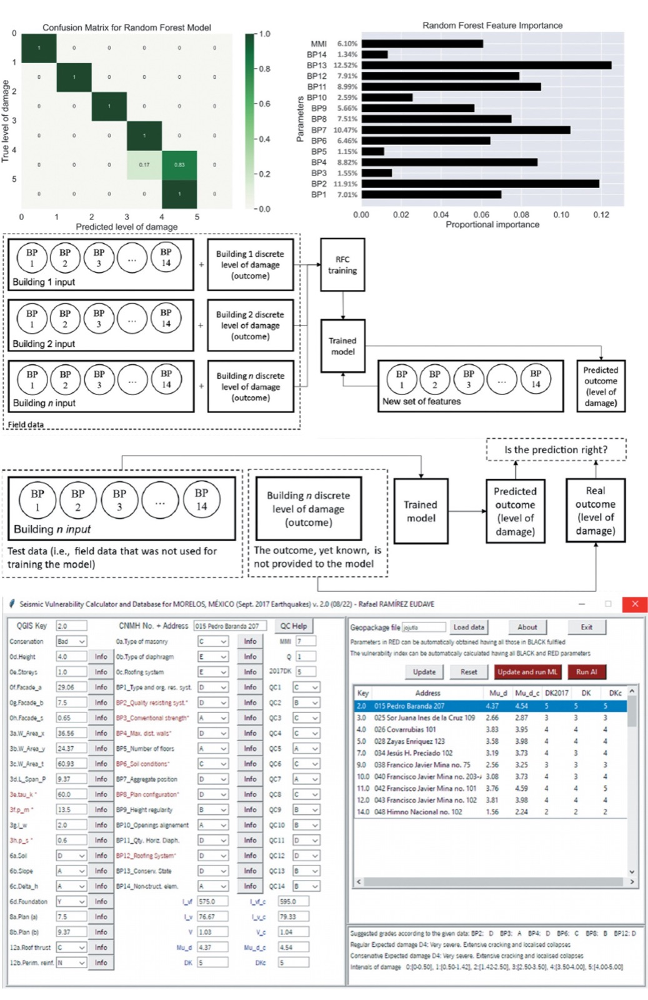
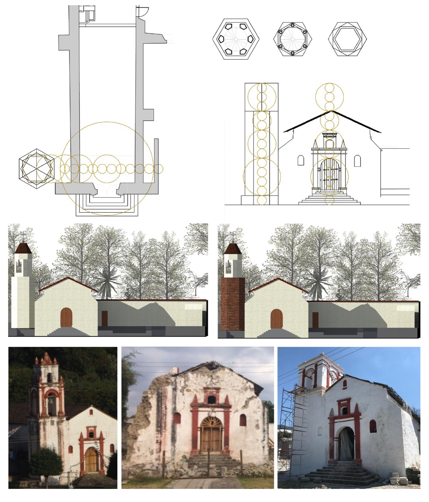
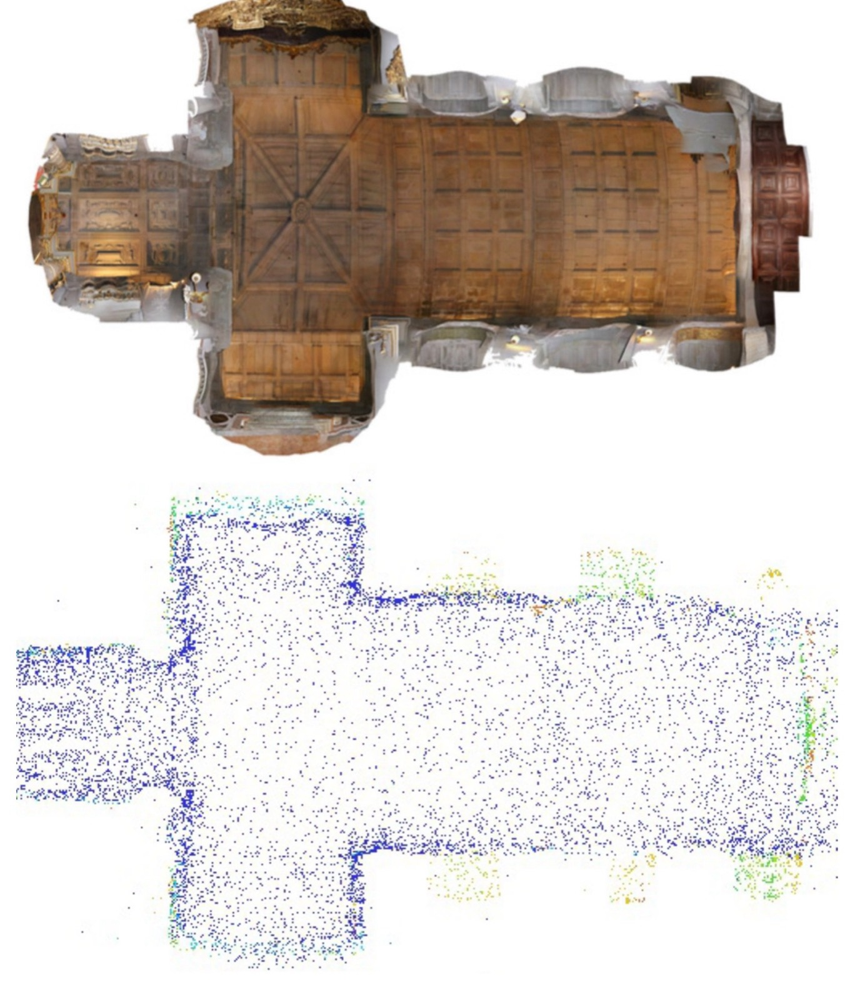

CORDHISK / Memory Twins
Research software connecting community memories with cultural heritage to document knowledge and meanings at risk of being lost. Tested at the Museu da Luz, Portugal.
Request software accessI'm Rafael, an architect with studies in civil engineering and a researcher working at the interplay of heritage, risk, and digitisation. I connect what communities value, what threatens its continuity, and the digital tools that help document it, assess vulnerability, and inform conservation.
Marie Skłodowska-Curie Postdoctoral Fellow
TU Delft · Delft, the Netherlands

01 / About
Heritage asks what matters, and to whom. Risk asks what could be lost, and why. Digitisation offers ways to record, connect, and analyse that evidence. My work brings these perspectives together, linking material conservation with the continuity of knowledge and memory.
With a background in architecture and civil engineering, I have worked across Mexico, Portugal, Italy, Switzerland, and the Netherlands. My experience spans post-earthquake restoration and seismic vulnerability assessment, photogrammetry, ontologies, and community-led heritage documentation.
At TU Delft, I am developing CORDHISK — Community-driven Digitisation for Heritage at Risk. Its Memory Twins connect community-contributed memories with interoperable metadata to document not only heritage, but what it means to people. Digital documentation does not replace conservation: it helps retain evidence and knowledge that can inform action.
About the CORDHISK project02 / Selected work
Memory Twins, seismic damage models, ontologies, and 3D documentation connect heritage meanings, vulnerability, and digital evidence in different ways. Post-earthquake restoration grounds this research in the material practice of conservation. Images open the full plates for the selected projects.

Research software connecting community memories with cultural heritage to document knowledge and meanings at risk of being lost. Tested at the Museu da Luz, Portugal.
Request software access
A framework for documenting everyday heritage through knowledge contributed by non-expert communities, validated through a large-scale experiment.
Read the research
Standardising urban-form characteristics across planning documents to make rules interoperable and machine-readable for the creation of 3D models.
View the project
Learning from almost 200 buildings damaged in Mexico's 2017 earthquakes to predict damage and improve parametric assessment of built-heritage vulnerability.
Read the research
Reconstruction of the San Pedro Tlalmimilulpan bell tower after its collapse in 2017, bringing together structural safety and architectural coherence.
View the project
Photogrammetric reconstruction of a historic church in Porto: documenting architecture through digital models and point clouds.
View the project03 / Research
How can heritage values shape what we assess? How can risk analysis guide what we document? And how can digitisation connect structural evidence with community knowledge? These questions link my research directions. Selected themes appear below; the complete list includes bibliographic references and Crossref citation counts.
npj Heritage Science
Buildings · 13(2), 540
International Journal of Disaster Risk Reduction · 74, 102909
Remote Sensing · 13(10), 1879
04 / Experience
From architecture to engineering and digital heritage: a journey across disciplines and countries.
View full CV · EN2025 — Present · the Netherlands
Delft University of Technology
Memory Twins and community-driven digitisation of heritage at risk, in partnership with the University of Lisbon.
2024 — 2025 · Switzerland
WSL · ETH Domain
Urban-form ontologies and historic-site management within UNESCO's Historic Urban Landscape approach.
2019 — 2023 · Portugal
Universidade do Minho
Seismic vulnerability, GIS databases, adobe characterisation, and machine learning for damage prediction.
2018 — 2019 · Mexico
TARES · Taller de Arquitectura y Restauración
Damage surveys and structural diagnosis of 6 earthquake-damaged historic temples. Led 2 restoration projects, coordinated architecture and engineering teams, and provided on-site construction supervision.
PhD in Civil Engineering · Universidade do Minho, 2023
Master in Heritage and Intervention Design · Università della Basilicata, 2018
MSc in Structural Analysis of Historical Constructions · Universidade do Minho, 2017
Degree in Architecture · UNAM, 2015
05 / Get in touch
Working in heritage conservation, risk analysis, or community-led digitisation? Let's explore how these perspectives can come together in research, documentation, and conservation projects.
R.Eudave.R@gmail.com